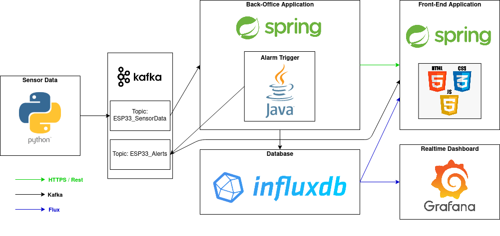
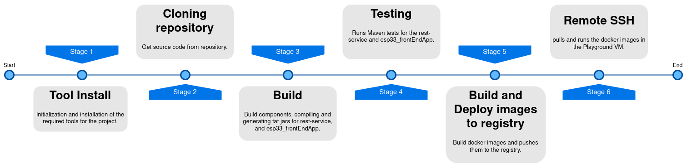

Objetivos e Motivação
Objetivos e motivação para o desenvolvimento do projeto.
Com o avançar da tecnologia, e o surgimento de novas maneiras de transmitir e monitorizar informação, não faz sentido que a comunicação entre membros das forças de bombeiros durante uma missão se mantenha resumida simplesmente a comunições VoIP, assim utilizando sensores do estado ambiente, localização e estado físico de bombeiros podemos fazer uma monitorização mais completa e em tempo real. Detetando possíveis situações de risco precossemente.
O objetivo principal do projeto tem em vista o auxílio no desempenho de missões por parte dos bombeiros, monitorizando o ambiente no qual se encontram, o seu batimento cardíaco e a sua posição ao longo do tempo.
Para além da mostragem de informação em tempo real, também temso em vista o armazenamento da informação recolhida, para que esta possa ser analisada mais tarde.
Cenários
No desenvolvimento do serviço, tivemos em consideração os seguintes cenários de utilização:
1. Monitorização de bombeiros, durante o decorrer das suas missões.
Neste cenário inclui-se a apresentação de informação útil tal como o batimento cardíaco e a posição de cada bombeiro, bem como os níveis de humidade do ar, temperatura, e a bateria dos sensores desde o ínicio da missão, para a monitorização dos bombeiros em real-time.
2. Armazenamento de informação relativa a missões passadas.
Neste cenário inclui-se a recolha e armazenamento numa base de dados informação proveniente dos sensors dos bombeiros para estudo e aprendizagem futura de situações de possível risco.
3. Notificação de situações de emergência, e/ou dificuldade técnica.
Neste cenário está previsto o envio de um alarme de notificação caso alguma situação anormal ou de perigo seja detetada, como por exemplo, batimentos cardíacos anormais, valores de humidade do ar, assim como baterias fracas.
Personas
Para um desenvolvimento mais focado nas funcionalidades e utilidade destas, foram identificadas duas personas como objetivos de utilização do sistema diferentes.
António Ribeiro
António é um homem de 55 anos, casado, com 2 filhos e é comandante nos Bombeiros Voluntários de Viseu. Precisa de monitorizar eficientemente os bombeiros em seu comando, quando se encontram em missão, e comunicações VoIP não são o método mais adequado uma vez que estes requerem dos bombeiros em missão participação ativa na comunicação para transmitirem o seu estado e o do ambiente para os seus colegas e comandante.
Paulo Loureiro
Paulo é um homem de 27 anos, solteiro e é bombeiro nos Bombeiros Voluntários de Viseu. Quer rever o seu comportamento e estado durante a missão anterior na qual participou, para de acordo com a sua experiência durante a missão possa avaliar e identificar situações de potencial risco em que esteve para que estas possam ser notificadas futuramente.
Arquitetura
Arquitetura do sistema desenvolvido.

Sensor Data: Os dados recolhidos pelos sensores são enviados com recurso a um script escrito em Python que faz o papel de um producer de Kafka, enviando os dados para um tópico de Kafka (ESP33_SensorData).
Back-Office Application: Aplicação Spring boot que é responsável pela interligação dos restantes componentes, pussui um receiver e um producer de Kafka, que está a receber dados no tópico para o qual o script Python está a enviar. Estes dados são processados e quando detetada uma situação de perigo são enviados pelo producer para o tópico de Kafka ESP33_Alerts.
Front-end Application: Aplicação responsável por apresentar os dados recebidos e processados, para uso por parte dos clientes, tem uma secção para dados em tempo real onde serão também apresentados os alarmes e eventos relativos ás situações de perigo, e outra onde é possivel verificar os dados de missões passadas, estes dados serão recebidos de dois modos, dados em tempo real são recebidos por um cliente Kafka e os dados do histórico são recebidos através da Base de Dados InfluxDB.
Database: Base de dados InfluxDB, onde são armazenados os dados recebidos em tempo real, para uso e estudo futuro. Estará ligada á aplicação Front-end para disponibilizar quando pedidos os dados de missões passadas e as posições atuais realtime de cada bombeiro.
Realtime Dashboard: Dashboard Grafana, na qual são apresentados os dados detalhados em tempo real acerca de cada bombeiro. Recebe os útlimos dados inseridos na base de dados Influx, atualizando os a cada 5 segundos.
Runtime
Nesta secção é descrita a implementação mais em detalhe, bem como a divisão dos componentes pelo sistema.
Na nossa implementação optamos por adotar uma arquitetura baseada em microserivços onde cada serviço tem uma função. Deste modo temos um controlo superior sobre os diversos componentes da aplicação e torna-se assim mais fácil fazer a sua manutenção e monitorização.
Detalhes de implementação:
| Component | Technology | Runtime | Purpose |
|---|---|---|---|
| Kafka | Apache Kafka | Apache Kafka Message Broker, presente na VM Runtime ( 192.168.160.18 ) instalado pelo professor. Foram criados dois tópicos ESP33_SensorData e ESP33_Alerts. | Componente responsável pelo armazenamento de dados da aplicação, vindos dos Sensores. |
| InfluxDB | InfluxDB | Base de dados esp33_firefighters, presente na InfluxDB instalado pelo professor na VM Runtime. ( 192.168.160.18 ) | Componente responsável pelo armazenamento de dados da aplicação, vindos dos Sensores. |
| rest-service | Spring Boot, Java | Encontra se a correr num container de Docker chamado esp33_rest-service, na VM Playground no porto 33002. 192.168.160.87:33002 | App responsável pela análise dos dados provenientes dos sensores que se encontra no tópico ESP33_SensorData de Kafka. Envia posteriormente os dados para a Base de Dados InfluxDB do sistema. Também pussui um gerador de alertas, baseado na análise feita dos dados recebidos, estes alertas são enviados para o tópico ESP33_Alerts de Kafka. |
| esp33_frontEndApp | Spring Boot, Java | Encontra se a correr num container de Docker chamado esp33_frontendapp, na VM Playground no porto 33003. 192.168.160.87:33003 | App responsável pela apresentação dos dados existentes na base de dados no path "/historic", bem como apresentação em tempo real das posições de cada Bombeiro num mapa no path "/realtime". Neste último também são mostrados alertas quando estes surgem no tópico ESP33_Alerts. |
| Grafana Dashboard | Grafana | Encontra se a correr num container de Docker chamado esp33_grafana, na VM Playground no porto 33001. 192.168.160.87:33001 | Dashboard de controlo das estatísticas importantes (batimento cardíaco, humidade, temperatura, etc..) acerca de cada bombeiro, em gráficos. Dados estes recebidos em tempo real, vindos da base de dados InfluxDB. |
Deployment CI/CD
Apresentação e descrição do nosso pipeline Jenkins.

Detalhes de cada etapa:
| Stage | Purpose | Used Tools |
|---|---|---|
| Tool Install | Instânciação e inicialização das variáveis e ferramentas necessárias á execução do Pipeline. | SSH Command |
| Clone Repository | Copia todo o código fonte necessário para a VM de implementação, presente no repositório de desenvolvimento. | Git |
| Build | Nesta fase do Pipeline é feita a compilação de cada uma dos componentes clonados anteriormente e são gerados os fat jars para as apps rest-service e esp33_frontEndApp. | Maven, JDK 11 |
| Testing | Corre os testes de Maven para as aplicações Spring Boot (rest-service, esp33_frontEndApp). | Maven, JDK 11 |
| Build and Deploy images to registry | Nesta etapa são construídas as imagens Docker, a partir dos ficheiros Dockerfile de cada componente e é feito o push dessas imagens para o registry. | Docker |
| Remote SSH | Efetuado o docker pull da imagem do registry e de seguida docker run na VM de deployment (Playground). | SSH Command |
Requisitos
Requisitos/containers necessários para correr o Pipeline Jenkins corretamente.
- Apache Kafka Broker a correr no porto 19092.
- InfluxDB a correr no porto 8086.
Monitoring
Para um bom acompanhamento e update continuo do serviço é necessário monitorizar o sistema. Detalhes da nossa implementação de monitorização.
ELK ( Elastic Search, Logstash, Kibana )
Para o nosso sistema, foi decidido utilizar um processo de monitorização baseado em ELK. No qual, os Logs gerados pelo nosso sistema são armazenados e processados. A partir da informação contida nos Logs é possível ter uma visão generalizada do funcionamento da aplicação. É possível verificar dados recebidos/enviados entre os diferentes componentes do sistema, bem como acompanhar o processo de operação do sistem para determinadas ações do utilizador.
Esta informação fica disponível em 192.168.160.18:5601/app/management/kibana/ onde é possível verificar as métricas obtidas.
_____________________________________________________________________________________________
No entanto, apesar das diversas tentativas por parte do grupo não foi possível implementar o sistema de monitorização ELK com sucesso.